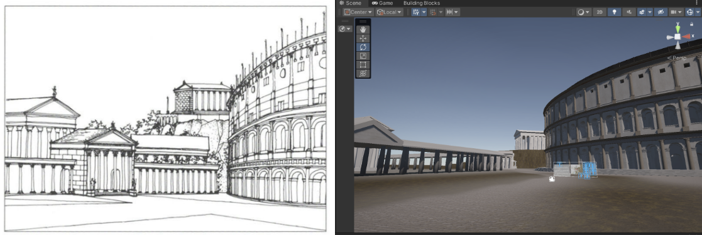
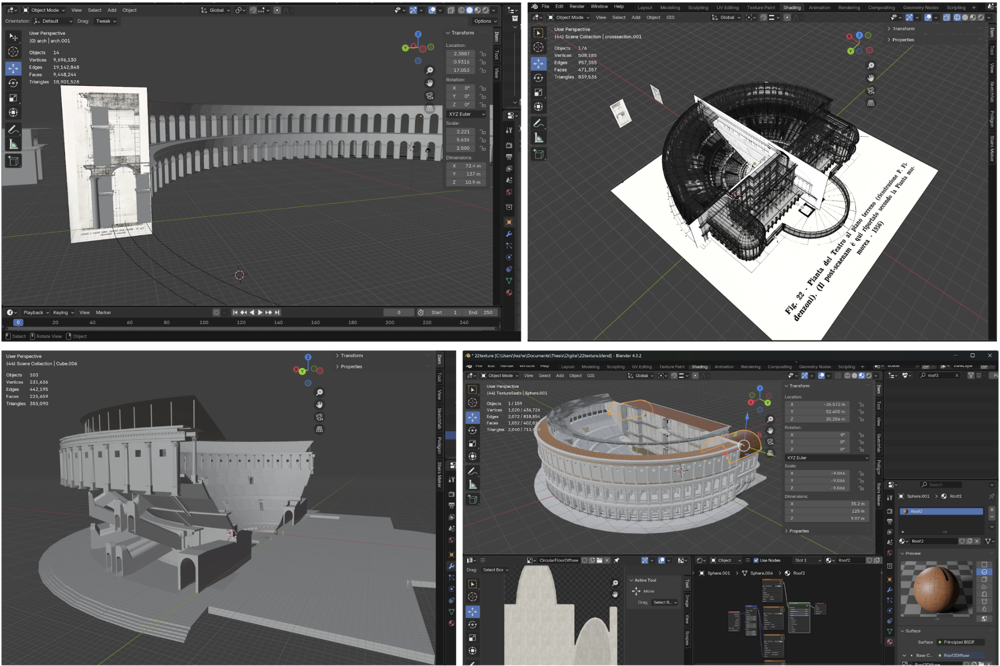
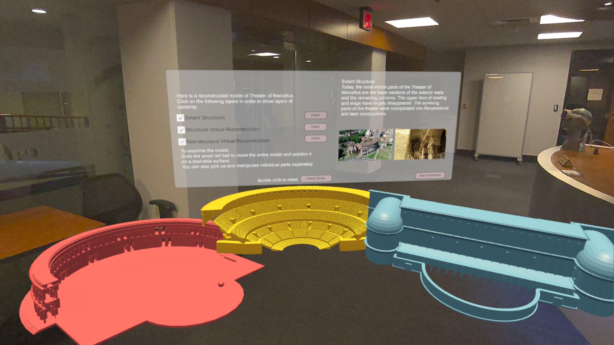
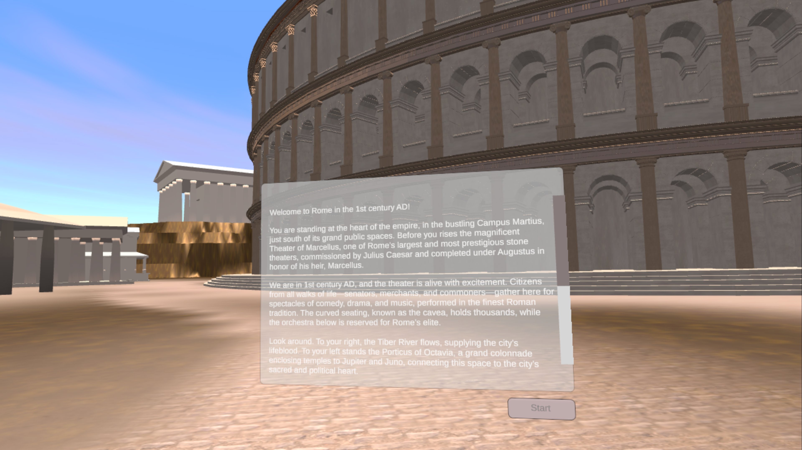
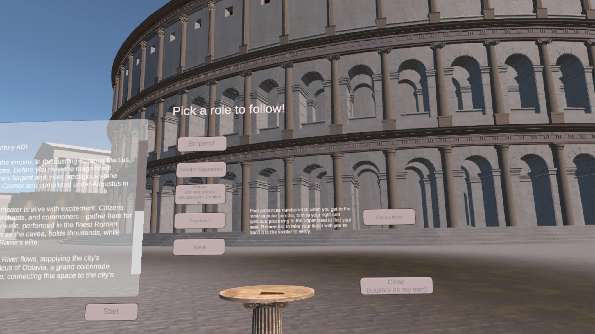
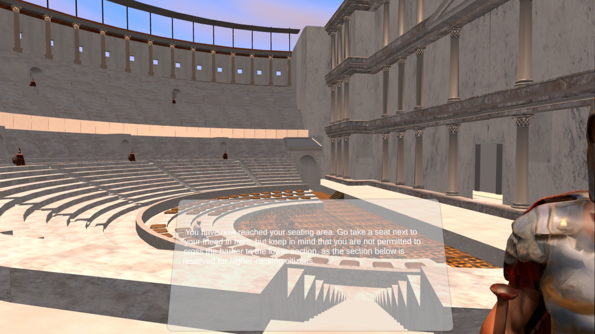
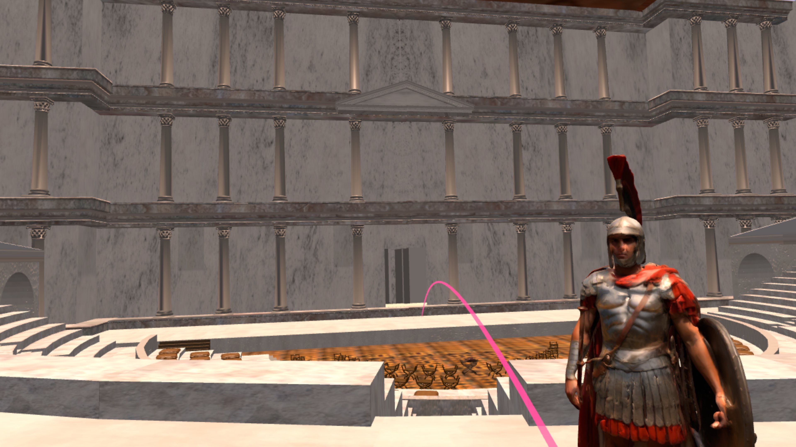
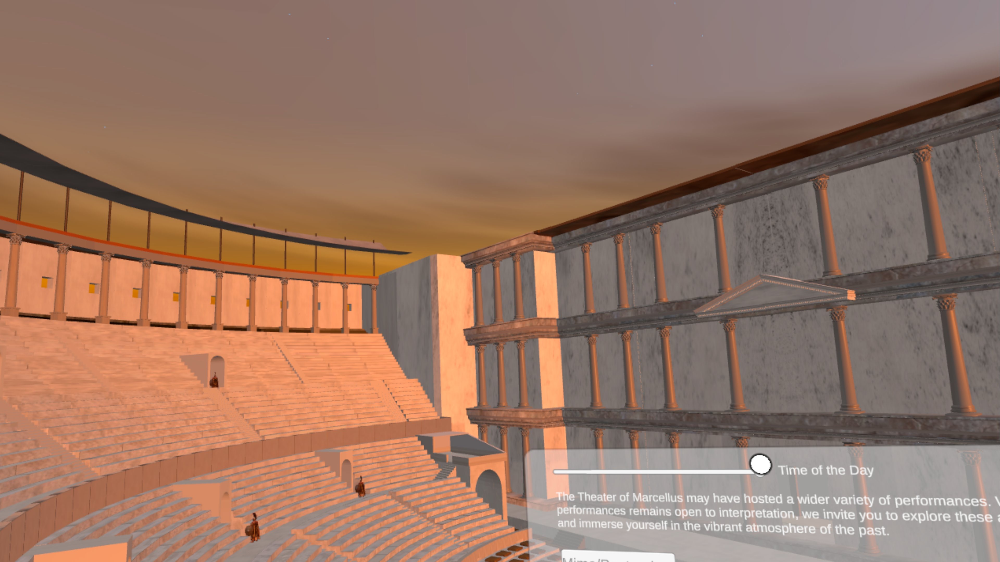
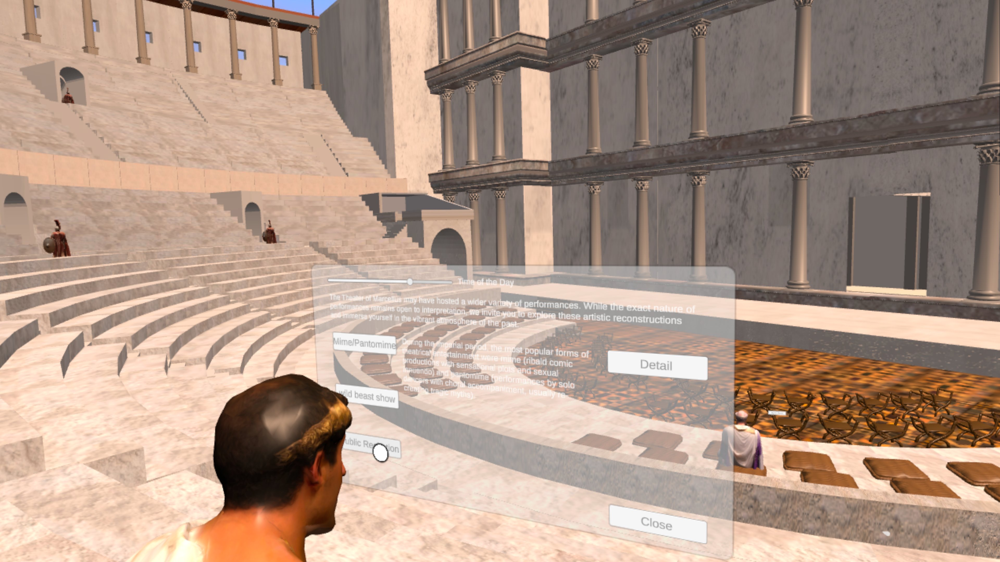
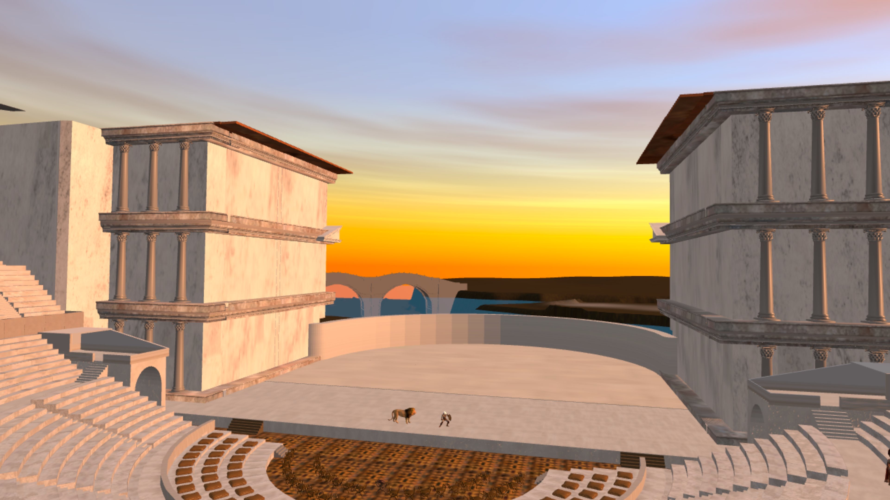

This project leverages immersive digital technologies, virtual reality (VR) and augmented reality (AR), to reimagine the Theater of Marcellus, one of ancient Rome's most significant monuments.
This project leverages immersive digital technologies, virtual reality (VR) and augmented reality (AR), to reimagine the Theater of Marcellus, one of ancient Rome's most significant monuments. By integrating digital reconstruction and interactive experiences, the project explores how Roman spatiality, architectural hierarchy, and political messaging shaped the theater's function and audience experience.
Using Blender for 3D modeling and Unity for development, the experience is implemented on Meta Quest 3, allowing users to navigate the theater's structure and engage as Roman spectators. The project highlights the strictly structured seating arrangements, orchestrated movement through space, and the theater's role in imperial display, demonstrating how architecture reinforced social stratification.
Beyond visualization, this project examines the balance between scholarly accuracy and interactive engagement, offering a deeper understanding of the theater's historical and cultural significance. Future expansions could introduce narrative-driven experiences and broader accessibility efforts, ensuring that digital reconstructions serve both academic inquiry and public engagement in meaningful ways.




Interactive system
Role Selection Mechanics



Environmental storytelling
Space and Experience



Walkthrough